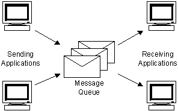
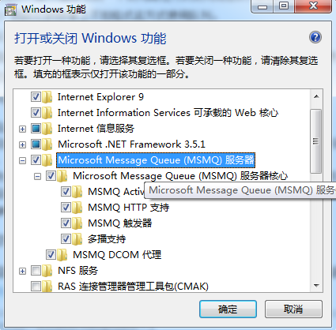
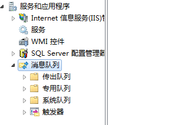
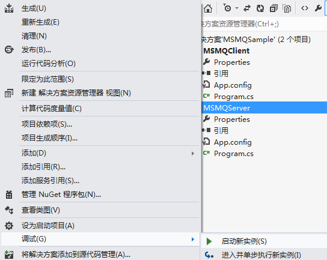
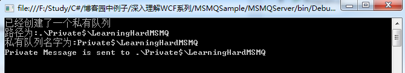
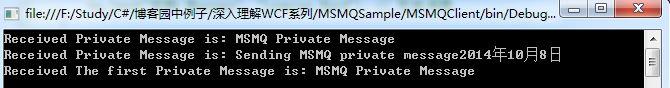

1. 引言
Windows Communication Foundation(WCF)是Microsoft为构建面向服务的应用程序而提供的统一编程模型，该服务模型提供了支持松散耦合和版本管理的序列化功能，并提供了与消息队列（MSMQ）、COM+、Asp.net Web服务、.NET Remoting等微软现有的分布式系统技术。利用WCF平台，开发人员可以很方便地构建面向服务的应用程序（SOA）。可以认为，WCF是对之前现有的分布式技术（指的是MSMQ、.NET Remoting和Web 服务等技术）的集成和扩展，既然这样，我们就有必要首先了解下之前分布式技术，只有这样才能更深刻地明白WCF所带来的好处。
2. 简介
MSMQ全称是Microsoft Message Queue——微软消息队列。它是一种异步传输模式，可以在不同的应用之间实现相互通信，相互通信的应用可以分布在同一台机器上，也可以分布于相连的网络空间中的任一位置。
2.1 工作原理
MSMQ的实现原理是：消息的发送者把自己想要发送的信息放入一个容器，然后把它保存到一个系统公用空间的消息队列中，本地或异地的消息接收程序再从该队列中取出发给它的消息进行处理。
消息队列是一个公用存储空间，它可以存在于内存中或物理文件中，因此，消息以两种方式发送，即快递方式和可恢复模式。它们的区别是消息存储位置的不同，快递方式，为了消息的快速传递，所以把消息放置在内存中，而不放在物理磁盘上，以获得较高的处理能力；而可恢复模式在传送过程的每一步骤中，都把消息写入物理磁盘上，这样当保存消息队列的机器发生故障而重新启动后，可以把发送的消息恢复到故障发送之前的状态，以获得更好的消息恢复能力。消息队列可以放在发送方、接收方所在的机器上，也可以单独放置在另外一台机器上。另外，采用消息队列机制，发送方不必要担心接收方是否启动，是否发生故障等因素，只要消息成功发送出去，就可以认为处理完成，而实际上对方可能甚至未开机，或者实际消息传递到对方可能在第二天。MSMQ机制类似QQ消息传递机制。下图演示了MSMQ的实现原理

MSMQ中主要有两个概念。
- 一个是消息Message：Message是通信双方需要传递的消息，它可以是文本、图片、视频等。消息包含发送和接收者的标识，只有指定的用户才能取得消息。
- 一个是队列Queue：用来保存消息的存储空间，MSMQ中主要包括以下几种队列类型：
- 公共队列：在整个消息队列网络中复制，有可能由网络连接的所有站点访问。路径格式为：机器名称\队列名称
- 专用队列（或叫私有队列）：不在整个网络中发布，它们仅在所驻留的本地计算机上可用，专用队列只能由知道队列的完整路径名称或标签的应用程序访问。路径格式为：机器名称\Private$\队列名称
- 日志队列：包含确认在给定“消息队列中发送的消息回执消息”。路径格式为：机器名称\队列名称\Journal$
- 响应队列：包含目标应用程序接收到消息时返回给发送应用程序的响应消息，包括机器日志队列、机器死信队列和机器事务死信队列。
- 机器日志队列对应的格式为：机器名称\Journal$；
- 机器死信队列对应的格式为：机器名称\Deadletter$；
- 机器信道死信队列对应的格式为：机器名称\XactDeadletter$。
2.2 队列引用说明
当创建了一个MessageQueue实例之后，就应指明和哪个队列进行通信，在.NET中有3种访问指定消息队列的方法：
- 使用路径，消息队列的路径被机器名和队列名唯一确定，所以可以用消息队列路径来指明使用的消息队列。
- 使用格式名（format name），它是由MSMQ在消息队列创建时生成的唯一标识，个使命不由用户指定，而是由队列管理者自动生成的GUID。
- 使用标识名（label），它是消息队列创建时由消息管理者指定的带有意义的名字。
3. 消息队列的优缺点
采用消息队列的好处是：由于是异步通信，无论是发送方还是接收方都不同等待对方返回成功消息，就可以执行余下的代码，大大提高了处理的能力；在信息传递过程中，具有故障恢复能力；MSMQ的消息传递机制使得通信的双方具有不同的物理平台成为可能。
消息队列缺点是不适合Client需要Server端实时交互情况，大量请求时候，响应可能延迟。
4. MSMQ开发应用
4.1 环境准备
要想在.NET平台进行MSMQ的开发，需要安装消息队列，你需要打开控制面板->程序->打开或关闭Windows功能，勾选消息队列服务所有选项，具体操作如下图所示：

勾选完之后点击确定之后，可以在我的电脑->管理->服务和应用程序->消息队列 看到下面的图：

看到上面这个图代表你已经成功配置了MSMQ的开发环境，下面就可以使用Visual Studio 进行开发。注意，对特定类型队列的操作代码，一定要成功安装对应的队列类型。
4.2 使用MSMQ开发分布式应用
首先，实现服务器端。创建一个控制台项目，添加System.Messaging引用，因为消息队列的类全部封装在System.Messaging.dll程序集里。具体服务端的代码如下：1
2
3
4
5
6
7
8
9
10
11
12
13
14
15
16
17
18
19
20
21
22
23
24
25
26
27
28
29
30
31
32
33
34
35
36
37
38
39
40
41
42
43
44
45
46
47
48
49
50
51
52
53
54
55
56
57
58
59
60
61
62
63
64
65
66
67
68
69
70
71
72
73
74
75
76
77
78
79
80
81
82
83
84
85
86
87
88
89
90
91
92
93
94
95using System;
using System.Messaging;
namespace MSMQServer
{
class Program
{
static void Main(string[] args)
{
// 创建一个公共队列,公共队列只能创建在域环境里
//if (!MessageQueue.Exists(@".\LearningHardMSMQ")) // 判断此路径下是否已经有该队列
//{
// using (MessageQueue mq = MessageQueue.Create(@".\LearningHardMSMQ"))
// {
// mq.Label = "LearningHardQueue"; // 设置队列标签
// Console.WriteLine("已经创建了一个公共队列");
// Console.WriteLine("路径为:{0}", mq.Path);
// Console.WriteLine("队列名字为:{0}", mq.QueueName);
// mq.Send("MSMQ Message", "Leaning Hard"); // 发送消息
// }
//}
//if (MessageQueue.Exists(@".\Private$\LearningHardMSMQ"))
//{
// 删除消息队列
// MessageQueue.Delete(@".\Private$\LearningHardMSMQ");
//}
// 创建一个私有消息队列
if (!MessageQueue.Exists(@".\Private$\LearningHardMSMQ"))
{
using (MessageQueue mq = MessageQueue.Create(@".\Private$\LearningHardMSMQ"))
{
mq.Label = "LearningHardPrivateQueue";
Console.WriteLine("已经创建了一个私有队列");
Console.WriteLine("路径为:{0}", mq.Path);
Console.WriteLine("私有队列名字为:{0}", mq.QueueName);
mq.Send("MSMQ Private Message", "Leaning Hard"); // 发送消息
}
}
// 遍历所有的公共消息队列
//foreach (MessageQueue mq in MessageQueue.GetPublicQueues())
//{
// mq.Send("Sending MSMQ public message" + DateTime.Now.ToLongDateString(), "Learning Hard");
// Console.WriteLine("Public Message is sent to {0}", mq.Path);
//}
if (MessageQueue.Exists(@".\Private$\LearningHardMSMQ"))
{
// 获得私有消息队列
MessageQueue mq = new MessageQueue(@".\Private$\LearningHardMSMQ");
mq.Send("Sending MSMQ private message" + DateTime.Now.ToLongDateString(), "Leaning Hard");
Console.WriteLine("Private Message is sent to {0}", mq.Path);
}
Console.Read();
}
}
}
```
服务器端代码需要注意的是，公共队列只能在域环境中创建，由于我的个人电脑没有加入域环境，所以不能创建公共队列，从开始的消息队列的截图也可以看出，在图中并没有安装公共队列。
实现完服务器端之后，自然就是完成客户端。MSMQ程序的原理主要是：服务器端把消息发送到共享的消息队列中，然后，客户端从这个共享的消息队列中取出消息进行处理。具体客户端的实现代码如下所示：
``` cs
using System;
using System.Messaging; // 需要添加System.Messaging引用
namespace MSMQClient
{
class Program
{
static void Main(string[] args)
{
if (MessageQueue.Exists(@".\Private$\LearningHardMSMQ"))
{
// 创建消息队列对象
using (MessageQueue mq = new MessageQueue(@".\Private$\LearningHardMSMQ"))
{
// 设置消息队列的格式化器
mq.Formatter = new XmlMessageFormatter(new string[] { "System.String" });
foreach (Message msg in mq.GetAllMessages())
{
Console.WriteLine("Received Private Message is: {0}", msg.Body);
}
Message firstmsg = mq.Receive(); // 获得消息队列中第一条消息
Console.WriteLine("Received The first Private Message is: {0}", firstmsg.Body);
}
}
Console.Read();
}
}
}
4.3 运行演示
经过上面步骤，我们已经完成了MSMQ分布式程序的实现了，下面看看如何运行该程序来查看效果。
首先，自然要启动服务器，右键MSMQServer项目->调试->启动新实例来启动服务器，具体步骤如下图所示：

运行成功之后，你将到服务器发送消息成功的控制台界面，效果图如下所示：

接下来运行客户端来从消息队列中取得消息并显示在控制台中，采用和服务器相同的方式来启动客户端，右键MSMQClient->调试->启动新实例，看到客户端的效果如下图所示：

从上图可以看出，客户端确实成功地取得了消息队列中的消息。
以上MSMQ程序需要特别注意是：MessageQueue.Receive()是取出消息队列中队列中的第一条消息，并从消息队列中移除它（MSDN中文翻译上是错误，MSDN写的是不移除，而英文原文是移除），而实际结果也是移除的，如果你再运行一次客户端时，你会发现消息队列中只有一条消息，具体运行效果如下图所示：